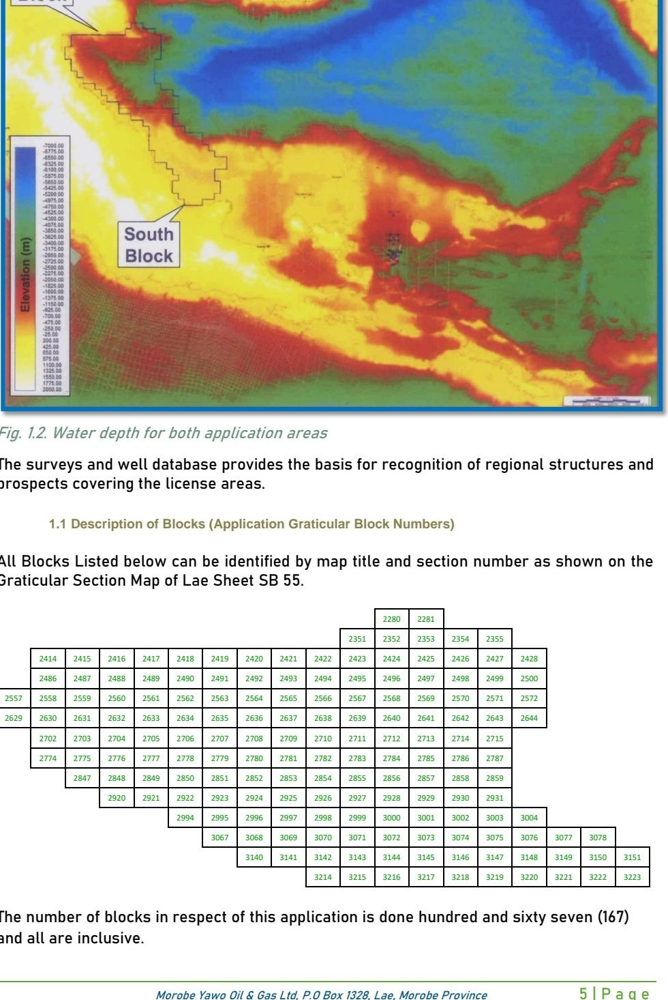
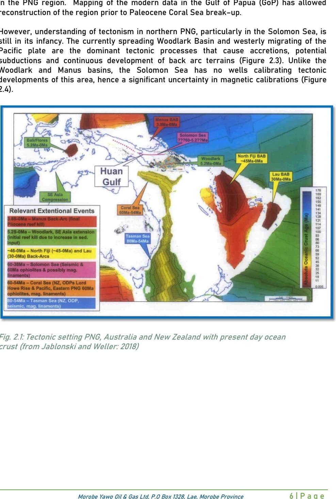
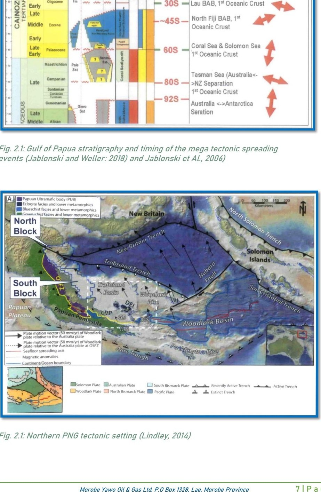
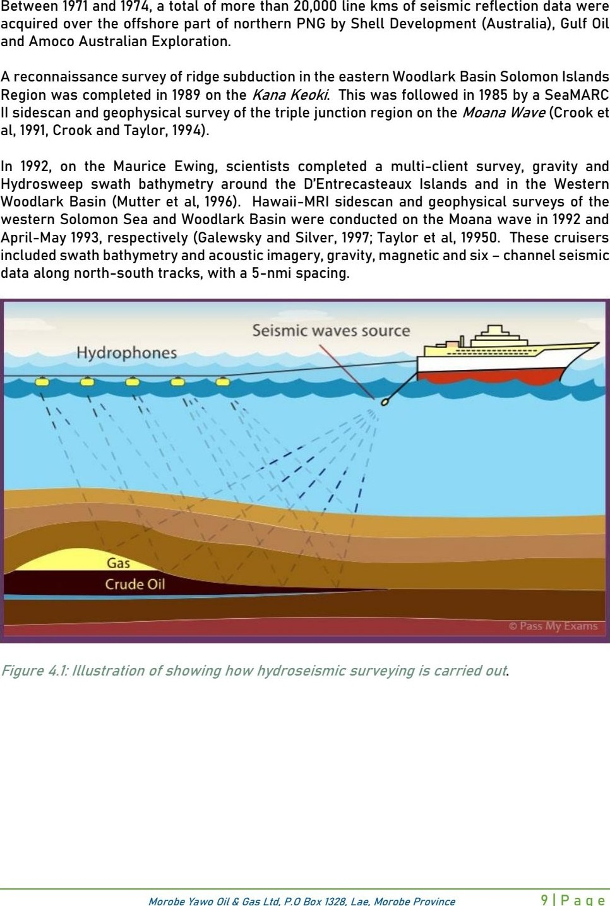

Frontier basin
The basin remains part of a frontier exploration setting where technical work and data interpretation are central to understanding its geological character.
APPL 674 • Huon Basin
Morobe Yawo Oil & Gas Limited is progressing APPL 674 within the Huon Basin, Papua New Guinea. The project represents a frontier petroleum exploration opportunity focused on geological evaluation, technical assessment and responsible exploration.
Executive Summary
APPL 674 is being advanced in the Huon Basin, a region of interest for offshore petroleum exploration in Papua New Guinea. The project is shaped by technical evaluation, disciplined planning and a long-term approach to exploration.
Morobe Yawo Oil & Gas Limited is focusing on a measured progression of technical workstreams, including basin assessment, data review and stakeholder engagement, while maintaining a clear emphasis on responsible project development.
Location & Basin Context
The Huon Basin is a frontier basin in the Papua New Guinea offshore setting. It is relevant to the broader regional exploration context because of its geological setting and the ongoing interest in offshore basin evaluation.
The basin remains part of a frontier exploration setting where technical work and data interpretation are central to understanding its geological character.
Its location within the wider Papua New Guinea offshore region places it within an area of continuing industry interest and regional geological study.
Exploration activity in the basin is being approached through systematic evaluation rather than assumptions about resource outcomes.
Any future development pathway would depend on technical review, regulatory process and responsible project management.


Why APPL 674
APPL 674 reflects a focused exploration mandate supported by scale, technical relevance and a long-term outlook.
Positioned within a significant regional offshore setting relevant to Papua New Guinea petroleum exploration.
Represents a frontier exploration opportunity where technical evaluation remains central to progress.
The application covers a substantial area, supporting breadth of geological assessment.
The project is being advanced with a long-term perspective, aligned to careful technical development.
Technical Characteristics
The following summary provides a concise overview of the project’s principal characteristics and current status.
| Metric | Detail |
|---|---|
| Area | Approximately 13,608 km² application area |
| Water Depth | Up to 4,200 m |
| Project Stage | Exploration application |
| Operator | Morobe Yawo Oil & Gas Limited |
| Country | Papua New Guinea |
| Basin | Huon Basin |
| Status | Exploration evaluation and stakeholder engagement underway |
The following source-derived figures provide regional tectonic context for technical evaluation. They do not represent a discovery, reserve estimate or licence award.


Exploration Programme
The project is being progressed through a staged programme that reflects technical discipline, stakeholder engagement and long-term planning.
APPL 674 is positioned as an exploration application within the Huon Basin, forming the foundation for subsequent technical review.
Initial evaluation work focuses on the project setting, geological context and available data supporting technical understanding.
Further work may include targeted technical studies and structured review to support decision-making and project planning.
Any future exploration activities would be guided by technical merit, regulatory requirements and responsible project execution.

Investment Opportunity
The opportunity is grounded in the company’s approach to strategic partnerships, technical capability, financial discipline and long-term collaboration.
MYOGL seeks to engage with partners who value measured project development and long-term participation.
The project is being advanced through disciplined technical evaluation and a clear understanding of its exploration context.
Financial planning remains aligned to responsible execution and the staged progression of the project.
MYOGL’s approach is built around durable relationships supported by transparency and careful project stewardship.
Frequently Asked Questions
APPL 674 is an exploration application in the Huon Basin, Papua New Guinea, being progressed by MYOGL as part of a broader frontier exploration strategy.
The project is located within the Huon Basin in Papua New Guinea, within a broader offshore exploration context that is being assessed through technical review.
APPL 674 is currently positioned as an exploration application and remains subject to technical evaluation and regulatory processes.
Interested parties may contact the Investor Relations team for project information, updates and further discussion regarding engagement opportunities.
Investor Contact
For project information, background materials or investor-related enquiries, please contact our Investor Relations team.